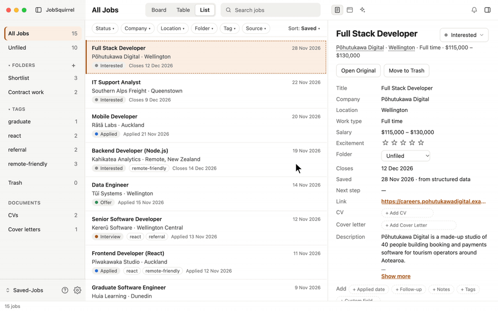
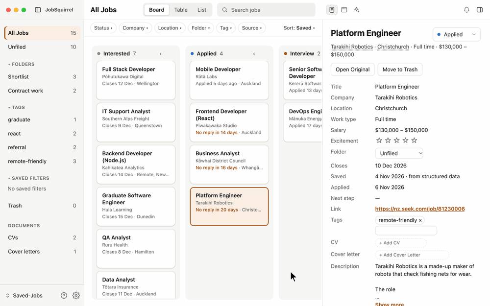

How to use JobSquirrel
JobSquirrel has two parts: an app on your computer that keeps your jobs, and a Chrome extension that saves job ads into it. This page shows you how to set up both and use them day to day.
Install
1. The app
- Download JobSquirrel: for Mac (macOS 14 or later) or for Windows (10 or 11, 64-bit).
- Mac: open the download and drag JobSquirrel into your Applications folder. Windows: open the download; if Windows warns you, click More info, then Run anyway.
- JobSquirrel opens with a library called Saved-Jobs in your home folder. That is where your jobs are kept. You can start using it straight away.
2. The Chrome extension
- On JobSquirrel's first screen, click Open Extensions (on Windows Open Chrome, then press Ctrl V), or type chrome://extensions in Chrome. Turn on Developer mode (top right). Leave it on: Chrome turns the extension off without it.
- Drag JobSquirrel extension from JobSquirrel onto that page. The first screen shows a check mark when it is connected.
- The squirrel is in Chrome's toolbar. Not there? Click the puzzle piece and pin JobSquirrel.
Later, find it in Help → Get the Extension… It is also one file to download: drag it onto the same page, without unzipping it. A copy dragged from the app updates itself; a downloaded copy does not.
Uninstall
Your jobs stay in your library folder until you delete it yourself.
- In JobSquirrel's Settings, turn off opening at login. Then quit JobSquirrel and drag it from Applications to the Trash. On Windows, uninstall it in Settings → Apps.
- In Chrome, go to chrome://extensions and remove the extension.
- On a Mac, to remove its settings too, delete Saved-Jobs-Extension in your home folder, and Application Support/JobSquirrel and Logs/JobSquirrel in your Library folder.
Save a job
- Make sure the JobSquirrel app is open.
- Open a job ad on Seek, Trade Me Jobs, LinkedIn, Indeed, a graduate or volunteer site, or a company's own careers page.
- Click the squirrel in Chrome's toolbar. JobSquirrel saves the job straight away: it reads the title, company, location and the rest from the page. The popup says Saved to JobSquirrel.
- If you want, pick a Folder and a Status, or add Tags, in the popup. Each change is saved as you make it.
JobSquirrel keeps a copy of the whole ad on your Mac, so you can still read it after the site takes it down.
Supported sites
On these sites JobSquirrel fills in the job details for you:
- Job boards: Seek (New Zealand and Australia), Trade Me Jobs, LinkedIn, Indeed
- Graduate jobs: SEEK Grad, Prosple, Student Job Search (sign in to see every detail)
- Volunteering: SEEK Volunteer and regional volunteer centres such as Volunteering Auckland (the role's title)
- Sector and employer sites: Education Gazette, Hays, and employers' careers pages that describe their jobs in the standard way many sites use
Any other job page works too: JobSquirrel always keeps a full copy of the page and fills in what the page provides, at least the title. Use Select or type to add the rest. More sites come in later versions.
If a detail is missing or wrong
If JobSquirrel didn't find a detail, the popup says so, for example “Not found on the page: salary.” Click Add, or click Edit details ▾ to see every detail. Type in the box, or click Select next to it, highlight that text on the job page and click Use selection. The popup comes back with it filled in and marks it “selected by hand”. If the popup doesn't come back by itself, click the squirrel again. Your changes are saved as you go.
“One OK from Chrome, then it saves”
Your copy of the ad keeps its pictures and layout. For that, Chrome needs your OK once. The first time you save, the popup asks for it: click Allow, then Allow on Chrome's own message, and the job is saved. Click Save text only this time to keep just the words of this ad; the popup asks again next time. JobSquirrel only reads the page you are on, and only when you click the squirrel.
Extension settings
Right-click the squirrel and choose Options. Under Copies of job ads, choose Keep pictures and layout or Keep text only. With text only, Chrome never asks for its OK. You can also turn on Show which jobs I've saved on Seek search results: a small JobSquirrel label with the status then shows next to each job you saved. It is off until you turn it on.
Already saved?
If you click the squirrel on an ad you saved before, JobSquirrel doesn't save it twice. The popup says when you saved it, and you can change its folder, status or tags there, for example right after you apply. Click Show in App to jump to it. If it is in the Trash, the popup says In your Trash; click Restore to bring it back.
Find your jobs
The window has three parts: the sidebar on the left, your jobs in the middle, and the details of the selected job on the right.
Sidebar
All Jobs shows everything. Unfiled shows jobs not in a folder. Below them are your folders, your tags, your saved filters and the Trash. Click any of them to see just those jobs. Under Documents, CVs and Cover letters list every file you added and the jobs you used it for.
Filters
Above the list, click Status, Company, Location, Folder, Tag or Source and tick what you want to see. Each choice shows how many jobs match. Ticking two options in one filter shows jobs with either; using two filters shows jobs that match both. Click Clear to see all jobs again. Click a company or place in a job's details to see all jobs there.
When you use a set of filters often, click Save Filter… and give it a name. It appears in the sidebar.

Board, Table and List
Board shows a column for each status, so you can see where every application stands. Click the arrow in a column's heading to fold it into a thin strip, and click the strip to open it again; Rejected starts folded. Table shows every detail as a spreadsheet; click a column's heading to sort by it. List shows your jobs one under another. Sort changes the order. JobSquirrel remembers which one you used last.
The two buttons at the top corners of the window show or hide the sidebar and the details.
Search
Type in Search jobs to find jobs by title, company, place, tag or folder.
Keep track of applications
Each job has a status:
- Interested: you saved it and might apply.
- Applied: you sent your application.
- Interview: they want to talk to you.
- Offer: they offered you the job.
- Rejected: it didn't work out this time.
Change it with the status menu at the top right of the details, in the popup, or by dragging the card to another column on the Board. When you move a job to Applied, JobSquirrel fills in today as the applied date if it has none.

Add more to a job
Click any detail, such as the title, company or salary, to change it. Add the CV and cover letter you sent with + Add CV and + Add Cover Letter. The Add row at the bottom adds an applied date, a follow-up, notes, tags or a field of your own with + Custom field….
Reminders
Give a job a follow-up date and JobSquirrel reminds you at 9 am that day, or at the time you choose. For a job still marked Interested that has a closing date, it also reminds you 3 days before it closes and on the closing day. The bell at the top right lists the reminders of the past week; click one to open its job.
Reminders come while JobSquirrel is running, even with its window closed. Reminders you missed show the next time you open it. To have it running every day, turn on Open JobSquirrel when I log in (on Windows, when I sign in) in Settings.
The saved page
The Saved Page tab shows the copy of the ad as it was when you saved it. Open Original opens the live ad in your browser, if it is still there.
Folders and libraries
Folders
Move your pointer over the sidebar and click + next to Folders, or choose File → New Folder. Type a name and press Return. Put a job in a folder from its details, from Job → Move to Folder, or by dragging it onto the folder in the sidebar. A job lives in one folder; use tags when it belongs in more than one place.
Right-click a folder to see Rename, Delete… and New Folder. You can also double-click a folder to rename it. When you delete a folder, its jobs move to Unfiled and no job is deleted. Right-click a tag or a saved filter and choose Delete… to delete it.
Libraries
A library is a folder on your Mac that holds a set of jobs, for example one for each job hunt. Click the library name at the bottom left to switch library, make a new one, or open one from another place.
If a library has been moved or is on a drive that isn't connected, JobSquirrel says it can't find it. Click Locate… to show it where the library is now, or connect the drive and it opens by itself. Nothing in the library is changed.
Your data
Everything stays on your Mac, in your library folder: your jobs, the saved pages and your files. JobSquirrel sends nothing anywhere: no account, no tracking, no cloud.
Back up
Choose File → Export Backup… to save your whole library as one zip file. Keep it somewhere safe, such as an external drive. Your Mac's Time Machine backs up the library folder too.
When a new version of JobSquirrel changes how your library is stored, it backs up the library first and tells you. Click Show Backup to see the copy.
Trash
Move to Trash takes a job out of your lists without deleting it. To bring it back, open Trash in the sidebar, select the job and click Restore. Empty Trash… deletes the jobs in the Trash for good.
Something wrong?
The popup says “Open JobSquirrel to save”
The extension can only save when the app is running. Open JobSquirrel, then click Try Again. If it still says this, quit JobSquirrel and Chrome, open JobSquirrel first, then Chrome.
Some details are missing after I click the squirrel
Some sites don't put every detail where JobSquirrel can read it. In the popup, click Add or Edit details ▾. Type the detail in, or click Select next to the box, highlight the detail on the page and click Use selection.
The saved page has no pictures
You clicked Save text only this time, said no to Chrome's message, or chose Keep text only in the extension's settings. If you said no, the popup asks again on your next save. To check the setting, right-click the squirrel and choose Options.
The popup says Chrome's own pages can't be saved
JobSquirrel only saves normal web pages. It can't save Chrome's own pages, such as a new tab or the settings. Open a job ad, then click the squirrel again.
Still stuck?
Tell us: in the app, Help → Send Feedback… opens the same page.
Keyboard shortcuts
| ⌘ 1 | Show as Board |
| ⌘ 2 | Show as Table |
| ⌘ 3 | Show as List |
| ⌘ F | Search jobs |
| ⌘ N | New folder |
| ⌃ ⌘ S | Show or hide the sidebar |
| ⌥ ⌘ I | Show or hide the job details |
| ⌘ , | Open Settings |
| ↑ ↓ | Select the job above or below |
| ⌘-click or ⇧-click | Select several jobs, to move them to a folder or the Trash together |
| ⌘ → / ⌘ ← | Move the job to the next or previous status |
| ⌘ ⌫ | Move the job to the Trash |
| Esc | Close a menu or the job card on the Board |